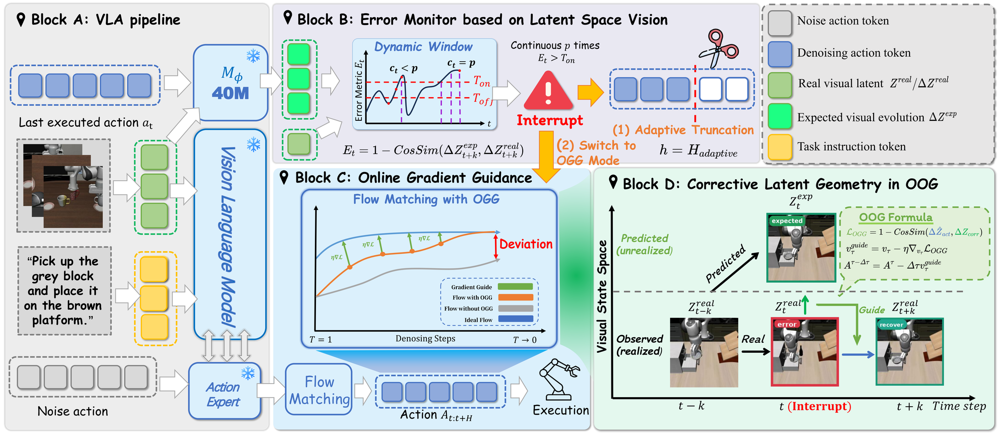
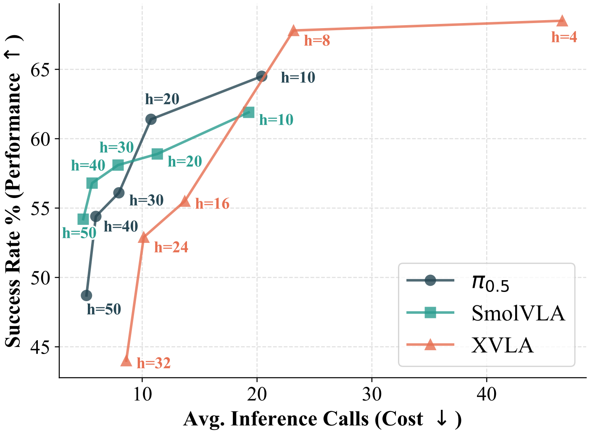
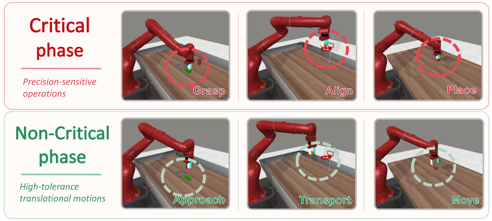
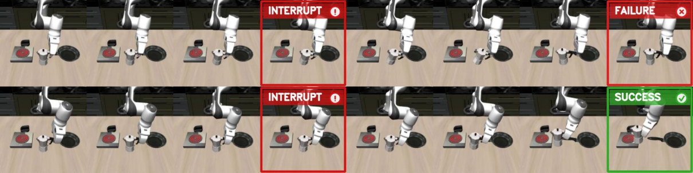

Chunked VLA 策略在扰动后可能继续执行队列中的旧动作。
VLA-Corrector: Lightweight Detect-and-Correct Inference for Adaptive Action Horizon
一个推理时轻量纠错框架，用于缓解 action-chunked VLA 策略中的开环执行盲区。
1Zhejiang University · 2Alibaba DAMO Academy
视频概览
一个简明的中英文论文 teaser，用于展示 VLA-Corrector 的动机、方法核心和论文报告的实验效果。
真机展示
三段 AgileX PiPER 真机无声展示视频。每段视频都包含执行过程中的人为扰动，以及策略通过纠错路径恢复执行。
摘要
VLA-Corrector 将固定 action chunk 执行改造成自适应执行过程：稳定时保持长 horizon 的效率， 当视觉动态出现漂移时中断 stale actions 并触发纠错。
Latent-space Vision Monitor 比较预测与实际视觉特征演化。
持续 mismatch 触发动作截断，并进行 OGG-guided corrective replanning。
动机
Action chunking 能减少昂贵的 VLA 调用，但也会在两次 replanning 之间留下盲区。 VLA-Corrector 在不重训完整 VLA 的前提下补上这段执行盲区。
监测 latent dynamics
预测短期视觉 residual，并与新的观测进行比较。
中断 stale chunks
当 mismatch 持续存在时，停止执行当前动作队列。
只在必要时重规划
用 OGG-guided recovery query 替代昂贵的逐步 VLA replanning。
方法总览
VLA-Corrector 保持 action-chunked VLA 接口不变，在推理时加入轻量 monitoring-and-recovery 路径。

外部 corrector 在获得 VLA policy 后训练。VLA backbone 保持冻结，其视觉编码器从 demonstration trajectories 中提取 latent representation；corrector 预测由已执行动作诱导的短期 latent residual。
部署时，LVM 比较预测和实际 latent residual。持续不一致会触发 interrupt event，丢弃 stale action queue， 并在下一次 recovery query 上应用 OGG。
实验设置
论文在 MetaWorld、LIBERO 和真实 AgileX PiPER 6-DoF 机器人上评估 VLA-Corrector。PI0.5 是主要 backbone， 同时包含 SmolVLA 和 X-VLA 的跨架构评测。
- Benchmarks: MetaWorld、LIBERO、AgileX PiPER 真机任务。
- Backbones: PI0.5、SmolVLA、X-VLA。
- Metrics: task success、policy calls、recovery rate、inference overhead。

主要结果
| 设置 | Baseline | + VLA-Corrector | 提升 |
|---|---|---|---|
| MetaWorld, PI0.5 avg. success | 48.70% | 64.35% | +15.65 points |
| MetaWorld, SmolVLA avg. success | 61.90% | 66.65% | +4.75 points |
| MetaWorld, X-VLA avg. success | 55.55% | 59.60% | +4.05 points |
| LIBERO, PI0.5 few-shot avg. success | 94.00% | 97.80% | +3.80 points |
| AgileX PiPER real-world avg. success | 55.6% | 73.3% | +17.7 points |
在 MetaWorld 组件消融中，truncation alone 将平均成功率从 48.70% 提升到 60.35%， truncation plus OGG 达到 64.35%。论文还报告 83.7% 的 truncations 发生在人工标注的关键阶段。
分析
论文进一步分析 interrupt 的发生时机，以及纠错路径如何从 stale chunks 中恢复。


代码
仓库包含基于 LeRobot 的实现、修改后的 VLA evaluation entry points，以及 latent dynamics corrector 训练模块。 数据集、原始 demonstration data、预训练权重、微调 checkpoint、训练后的 corrector checkpoint、输出、日志和缓存不包含在仓库中。 项目主页仅包含压缩后的无声真机展示视频。
安装、训练和评测命令见 GitHub 中文 README。
引用
论文和 arXiv 链接即将发布。在公开引用信息可用前，请暂时引用仓库。
@misc{vla_corrector_2026,
title = {VLA-Corrector: Lightweight Detect-and-Correct Inference for Adaptive Action Horizon},
author = {Pan, Yi and Pan, Miao and Lu, Qi and Huang, Jiaming and Zhang, Man and Huang, Siteng and Li, Xin and Zhang, Jie and Shen, Yongliang and Zhang, Xuhong and Zhang, Wenqi},
year = {2026},
howpublished = {GitHub repository},
url = {https://github.com/ZJU-OmniAI/vla-corrector}
}